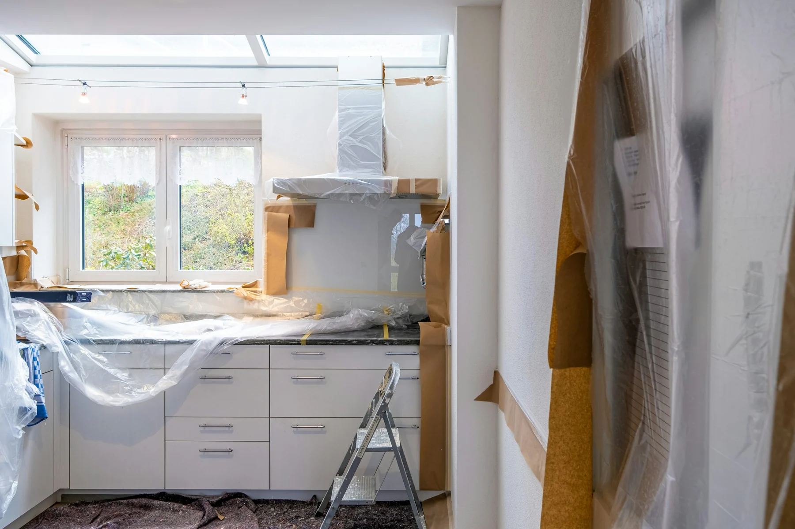
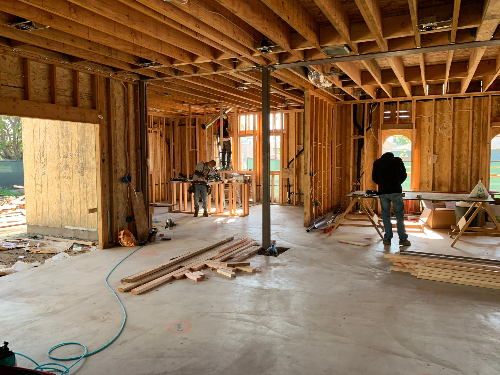

Banheiros e acabamentos
Referência visual para conversar sobre revestimentos, bancadas e escolhas de acabamento.
Fonte: Pexels
Compartilhe as informações essenciais para iniciar uma conversa produtiva sobre a obra.
Imagens ilustrativas: as fotografias abaixo são de bancos de imagem. Elas não retratam obras executadas, clientes ou integrantes da equipe da Construprimer.
Referência visual para conversar sobre revestimentos, bancadas e escolhas de acabamento.
Fonte: Pexels

Uma inspiração de cozinha durante a preparação para renovar o espaço.
Fonte: Unsplash

Imagem de referência para ilustrar uma etapa de estrutura e preparação interna.
Foto de Brett Rogers via Pexels
Licenças das imagens: Pexels · Unsplash. As fotos são apenas ilustrativas e não representam o portfólio da Construprimer.
Descreva o que pretende construir, reformar, melhorar ou concluir.
Informe cidade e bairro para dar contexto ao seu pedido.
Conte se está iniciando o planejamento, se já possui projeto ou se a execução começou.